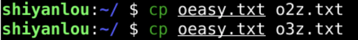
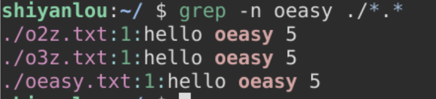
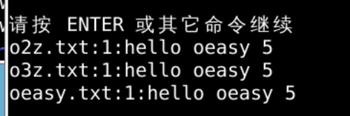
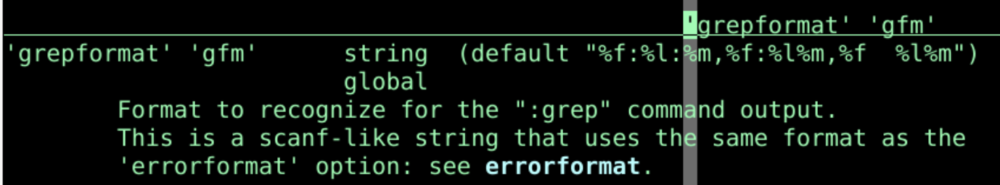
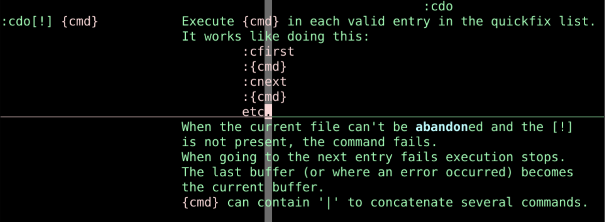
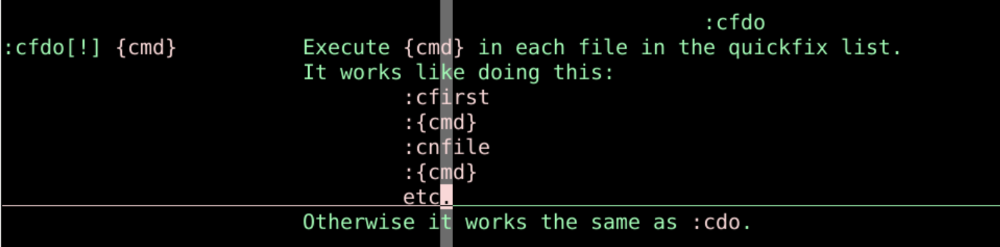

内容查找 grep
回忆
- 上次我们尝试了一下各种在vi中执行外部程序
- 可以排序
- 可以改大小写
- 还可以用管道
- 直接对于缓冲buffer文件进行操作
- 还是很方便的
- 其实还有一个外部命令很重要
- 根据内容搜索grep
- 这个怎么和vim配合呢？🤔
在终端的grep
- 写一个oeasy.txt

- 保存并退出
- 复制粘贴出来两份

- 内容查询grep

- 可以在三个文件中找到
oeasy - 去打开其中一个文件
vim oeasy.txt +1- 打开
oeasy.txt并且光标位于第1行
在vim中用grep
- 打开vim
:grep oeasy *.*- 搜索到好多匹配之后
- 放到一个prefix的列表中

- 还是查到了3个包含oeasy的文件
- 查询结果的展现形式来自于
grepformat这个选项

在结果列表中跳转
- 匹配结果列表
:copen新窗口打开列表:cclose关闭列表窗口:cc N跳到第N项
- 在匹配结果间跳转
:cfirst:cprev:cnext:clast
执行命令
:cdo {cmd}- 在每一个匹配的行执行命令{cmd}

:cfdo {cmd}- 在每一个匹配的文件上执行命令{cmd}

- 回忆一下
:bufdo:argdo:windo
总结
- 这次我们研究的是外部命令grep
- 可以在vim中使用grep
- 搜索的结果进入了列表
- 可以打开、遍历、跳转、关闭这个列表
- 也可以给列表中的匹配行或者每个文件执行命令
- 到此为止学了很多的命令
- 有内部的也有外部的
- 有的在命令行模式里面执行
- 还有的映射到一组键盘在正常模式下执行
- 但是都需要按下些什么按键才能支持
- 能否什么都不按自动就执行呢？🤔
- 下次再说！